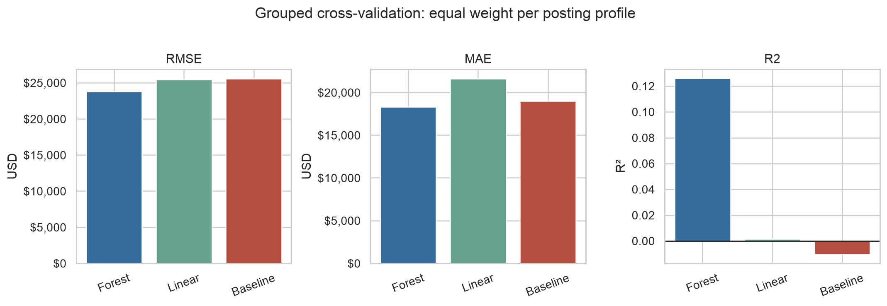
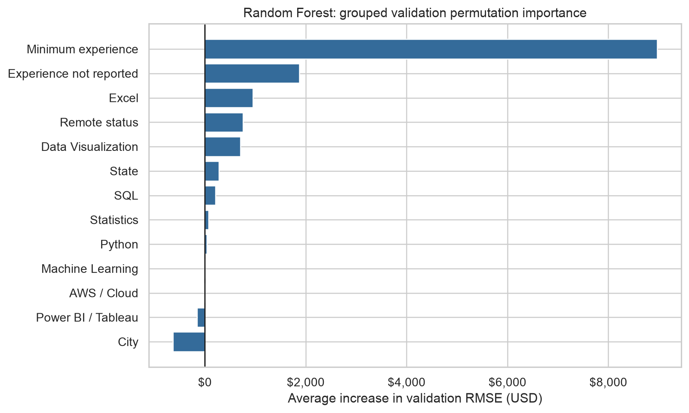

Salary Analysis and ML Methods
Step 4 — What the Salary Data Can Tell a Job Seeker
Purpose
Can experience, location, remote status and required skills help explain differences in advertised salaries?
We compare multiple linear regression and Random Forest with a simple average-salary baseline. The aim is to judge whether a model adds useful information to the salary benchmarks from the market baseline.
Data Used
- 140 Data Analyst postings in NAICS 523, posted between May and September 2024.
- 86 postings with a valid salary midpoint, representing 48 distinct posting profiles.
- 54 postings without salary remain in the wider market and skill analysis, but cannot be used to evaluate salary predictions.
- The target is salary_midpoint, the average of the lower and upper annualized salary endpoints. Hourly and monthly amounts were already converted during preparation and are used without another conversion.
The predictors are minimum experience, remote status, city, state and eight skill indicators: SQL, Python, Excel, Power BI / Tableau, statistics, visualization, machine learning and AWS. Salary endpoints are excluded from the predictors because they define the target.
How the Models Were Checked
- Divide the data into five validation parts.
- Train a fresh model on four parts and predict salaries for the remaining part; repeat until every posting has been checked once.
- Keep copies of the same employer/title/description together, so the model is checked on jobs it has not already seen.
- Give each posting profile equal total weight, preventing a job advertised in many cities from dominating the results.
- Fill missing experience using training data only; keep unknown remote status as its own category.
Main Results
The mean-salary baseline predicts the same training average for every validation job. It is a simple benchmark used to judge whether the two predictive models add value.
Lower RMSE and MAE mean smaller salary errors. Higher R² means the model explains more of the salary variation in held-out data; it is not an accuracy percentage.
| Model | RMSE | MAE | R² |
|---|---|---|---|
| Random Forest | $23,781 | $18,313 | 0.126 |
| Multiple linear regression | $25,419 | $21,622 | 0.002 |
| Mean-salary baseline | $25,572 | $18,982 | −0.010 |

- Random Forest performs best, reducing RMSE by about 7% compared with the baseline.
- Its average absolute error is still about $18,300. The model provides limited support for a precise individual salary estimate.
- Linear regression performs close to the baseline, suggesting that a simple linear relationship captures little of the observed salary variation.
Which Factor Contributed Most?

- Minimum experience is the strongest predictive signal in the Random Forest comparison.
- Skill, remote and location indicators contribute less consistently to salary prediction in this small sample.
- These are associations between job requirements and compensation. They do not show that learning a particular skill causes a pay increase.
What This Means for a Job Seeker
- Use advertised salary ranges and the sample benchmarks as reference points.
- Compare roles with similar experience requirements before comparing compensation.
- Prioritize skills using employer demand and your own skill gaps; a weak salary predictor can still be an important job requirement.
- Treat model estimates as exploratory. The sample is small, historical and limited to salary-disclosing postings.
Limitations
- Small salary sample: 86 postings represent only 48 profiles, so results are uncertain.
- Uneven regional and employer coverage: the selected historical sample does not establish national salary expectations or reliable regional pay differences.
- Missing and imperfect data: salaries, experience and remote status are incomplete; annualized salary values can still contain source errors.
- Limited model usefulness: MAE is about $18,300 and R² is 0.126. There is no independent final test, and predictive associations do not establish causal pay effects.
Use actual advertised ranges and comparable roles when making decisions. See Limitations for the full report section and product boundaries.
Continue to Career Recommendations for the practical learning and job-search priorities.